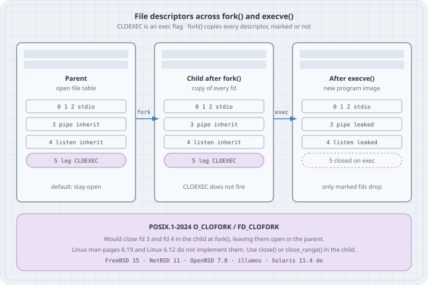

File-Descriptor Hygiene: CLOEXEC, close_range, and O_CLOFORK
File-Descriptor Hygiene: CLOEXEC, close_range, and O_CLOFORK
Thesis
fork() copies the calling process’s file-descriptor table. execve() then keeps every descriptor whose close-on-exec flag is clear. The default for open(), pipe(), socket(), accept(), and dup() is clear. A worker, a helper, a pager, a system() grandchild — any of them can inherit a pipe write end, a listening socket, a secret, or a log file you meant to keep to yourself.
O_CLOEXEC / FD_CLOEXEC is the opt-out for exec. It does nothing at fork. A prefork server that never execs still hands every unmarked descriptor to every child. POSIX.1-2024 added O_CLOFORK / FD_CLOFORK for that case. Linux does not implement them: not in this kernel (6.12), not in glibc 2.41, and not in the Linux man-pages 6.19 fcntl(2) VERSIONS note (“POSIX.1-2024 specifies FD_CLOFORK and F_DUPFD_CLOFORK, but Linux doesn’t support them”).
On Linux the working kit is: create every descriptor with an atomic *CLOEXEC constructor, and before exec sweep the rest with close_range(). Setting FD_CLOEXEC with fcntl() after open() is a race against any other thread that forks.
Mental model
open / pipe / socket / accept / dup → FD_CLOEXEC clear (inherited)
open(..., O_CLOEXEC) and friends → FD_CLOEXEC set (closed on exec only)
POSIX.1-2024 O_CLOFORK → FD_CLOFORK set (closed in the child at fork)
Linux: not implemented
| Flag / call | When it fires | On this Linux (6.12, glibc 2.41) |
|---|---|---|
O_CLOEXEC, FD_CLOEXEC |
execve / posix_spawn |
Yes. Linux 2.6.23; POSIX.1-2008 |
SOCK_CLOEXEC, pipe2, dup3, accept4, F_DUPFD_CLOEXEC |
At creation, sets FD_CLOEXEC |
Yes. SOCK_CLOEXEC / dup3 / pipe2 are in POSIX.1-2024 |
close_range(first, last, 0) |
Now: close every fd in the range | Yes. Linux 5.9, glibc 2.34 |
CLOSE_RANGE_CLOEXEC |
Now: mark the range close-on-exec | Yes. Linux 5.11 |
O_CLOFORK, FD_CLOFORK, F_DUPFD_CLOFORK, SOCK_CLOFORK |
fork in the child |
No. Headers do not define them; open(..., O_CLOFORK) does not compile |
A pipe is a single open file description with two descriptors. read() returns 0 only when every write end is closed. If the child still holds a write end, the reader waits forever. That is the leak that looks like a hang.
Worked examples
Tested on Debian 13 (x86_64), Linux 6.12.94+, GCC 14.2.0, glibc 2.41. Compile with -std=c17 -Wall -Wextra -O2. Several programs start with close_range(3, ~0U, 0) so the listing is about the descriptors we open, not whatever the parent process already leaked. In this captured session fds 0–2 are /dev/null and two pipes; in a terminal they are usually the tty. The man pages are not installed on this box; quotes below are from man-pages 6.19 (checked on man7.org, 2026-10-17) and from POSIX.1-2024.
Build the fd-dump helper once. Later cases exec it:
/* listfd.c — dump /proc/self/fd plus FD_CLOEXEC for each open descriptor */
#define _GNU_SOURCE
#include <dirent.h>
#include <fcntl.h>
#include <stdio.h>
#include <stdlib.h>
#include <string.h>
#include <unistd.h>
struct rec {
int fd;
int cloexec;
char target[128];
};
static int cmp_fd(const void *a, const void *b)
{
return ((const struct rec *)a)->fd - ((const struct rec *)b)->fd;
}
int main(void)
{
DIR *d = opendir("/proc/self/fd");
if (!d) {
perror("opendir");
return 1;
}
int dfd = dirfd(d);
struct rec recs[64];
int nrec = 0;
struct dirent *ent;
while ((ent = readdir(d)) != NULL && nrec < 64) {
if (ent->d_name[0] == '.')
continue;
int fd = atoi(ent->d_name);
char path[64];
snprintf(path, sizeof path, "/proc/self/fd/%d", fd);
ssize_t n = readlink(path, recs[nrec].target,
sizeof recs[nrec].target - 1);
if (n < 0)
continue;
recs[nrec].target[n] = '\0';
int flags = fcntl(fd, F_GETFD);
recs[nrec].fd = fd;
recs[nrec].cloexec = (flags >= 0 && (flags & FD_CLOEXEC));
nrec++;
}
qsort(recs, (size_t)nrec, sizeof recs[0], cmp_fd);
for (int i = 0; i < nrec; i++) {
printf("fd %2d %-8s %s%s\n",
recs[i].fd,
recs[i].cloexec ? "CLOEXEC" : "inherit",
recs[i].target,
recs[i].fd == dfd ? " (opendir)" : "");
}
closedir(d);
return 0;
}gcc -std=c17 -Wall -Wextra -O2 -o listfd listfd.cglibc’s opendir("/proc/self/fd") itself opens a descriptor with O_CLOEXEC. That extra line is the directory handle listfd used to walk the table, not a leak from the parent.
Case 0: What this libc actually defines
/* probe.c — what this libc and kernel actually define */
#define _GNU_SOURCE
#include <fcntl.h>
#include <linux/close_range.h>
#include <stdio.h>
#include <sys/socket.h>
#include <unistd.h>
#ifdef __GLIBC__
#include <gnu/libc-version.h>
#endif
int main(void)
{
#ifdef __GLIBC__
printf("glibc %s\n", gnu_get_libc_version());
#endif
printf("O_CLOEXEC = 0%o (0x%x)\n", O_CLOEXEC, O_CLOEXEC);
printf("FD_CLOEXEC = %d\n", FD_CLOEXEC);
printf("F_DUPFD_CLOEXEC = %d\n", F_DUPFD_CLOEXEC);
printf("SOCK_CLOEXEC = 0%o (0x%x)\n", SOCK_CLOEXEC, SOCK_CLOEXEC);
printf("CLOSE_RANGE_UNSHARE = %u\n", CLOSE_RANGE_UNSHARE);
printf("CLOSE_RANGE_CLOEXEC = %u\n", CLOSE_RANGE_CLOEXEC);
#ifdef O_CLOFORK
printf("O_CLOFORK = 0x%x\n", O_CLOFORK);
#else
printf("O_CLOFORK not defined\n");
#endif
#ifdef FD_CLOFORK
printf("FD_CLOFORK = %d\n", FD_CLOFORK);
#else
printf("FD_CLOFORK not defined\n");
#endif
#ifdef F_DUPFD_CLOFORK
printf("F_DUPFD_CLOFORK = %d\n", F_DUPFD_CLOFORK);
#else
printf("F_DUPFD_CLOFORK not defined\n");
#endif
#ifdef SOCK_CLOFORK
printf("SOCK_CLOFORK = 0x%x\n", SOCK_CLOFORK);
#else
printf("SOCK_CLOFORK not defined\n");
#endif
return 0;
}gcc -std=c17 -Wall -Wextra -O2 -o probe probe.c
./probeglibc 2.41
O_CLOEXEC = 02000000 (0x80000)
FD_CLOEXEC = 1
F_DUPFD_CLOEXEC = 1030
SOCK_CLOEXEC = 02000000 (0x80000)
CLOSE_RANGE_UNSHARE = 2
CLOSE_RANGE_CLOEXEC = 4
O_CLOFORK not defined
FD_CLOFORK not defined
F_DUPFD_CLOFORK not defined
SOCK_CLOFORK not definedO_CLOEXEC and SOCK_CLOEXEC are the same bit (02000000). Passing O_CLOFORK without an #ifdef fails at compile time:
oclofork_use.c:2:54: error: ‘O_CLOFORK’ undeclared (first use in this function)Case 1: A leaked pipe write end hides EOF
read() on a pipe returns 0 only when no process still holds a write end. fork() duplicates both ends. If the child is the reader and keeps the inherited write end, the parent’s close() is not enough.
/* leak_pipe.c — a leaked write end keeps the reader from seeing EOF */
#define _GNU_SOURCE
#include <errno.h>
#include <poll.h>
#include <stdio.h>
#include <string.h>
#include <sys/wait.h>
#include <unistd.h>
int main(int argc, char **argv)
{
int leak = argc > 1 && strcmp(argv[1], "leak") == 0;
int p[2];
if (pipe(p) == -1) {
perror("pipe");
return 1;
}
fflush(stdout);
pid_t pid = fork();
if (pid == -1) {
perror("fork");
return 1;
}
if (pid == 0) {
/* Child is the reader. Closing the inherited write end is what
lets read() return 0 once the parent drops its write end. */
if (!leak)
close(p[1]);
char buf[64];
for (;;) {
struct pollfd po = { .fd = p[0], .events = POLLIN };
int pr = poll(&po, 1, 400);
if (pr == 0) {
printf("child: poll timeout — write end still open, no EOF\n");
fflush(stdout);
_exit(2);
}
if (pr < 0) {
perror("poll");
_exit(1);
}
ssize_t n = read(p[0], buf, sizeof buf);
if (n == 0) {
printf("child: read returned 0 (EOF)\n");
fflush(stdout);
_exit(0);
}
if (n < 0) {
perror("read");
_exit(1);
}
printf("child: read %zd byte(s)\n", n);
fflush(stdout);
}
}
close(p[0]);
const char msg[] = "hello\n";
if (write(p[1], msg, sizeof msg - 1) != (ssize_t)(sizeof msg - 1)) {
perror("write");
return 1;
}
close(p[1]); /* parent drops its write end */
int st;
if (waitpid(pid, &st, 0) == -1) {
perror("waitpid");
return 1;
}
printf("parent: child exit %d\n", WIFEXITED(st) ? WEXITSTATUS(st) : -1);
return 0;
}gcc -std=c17 -Wall -Wextra -O2 -o leak_pipe leak_pipe.c
./leak_pipe
./leak_pipe leakchild: read 6 byte(s)
child: read returned 0 (EOF)
parent: child exit 0child: read 6 byte(s)
child: poll timeout — write end still open, no EOF
parent: child exit 2Six bytes is "hello\n". The data arrives either way. EOF does not, unless the child closes its copy of the write end. pipe2(p, O_CLOEXEC) would have marked both ends close-on-exec, which helps a later exec and does not close the child’s write end across a plain fork. For a fork-only worker, the child still has to close(p[1]).
Case 2: The child inherits the listening socket
A prefork server that listen()s and then fork()s workers wants the children to inherit that socket. Almost every other fork does not. SOCK_CLOEXEC does not change the fork case.
/* leak_listen.c — a child inherits the listening socket across fork() */
#define _GNU_SOURCE
#include <arpa/inet.h>
#include <fcntl.h>
#include <linux/close_range.h>
#include <netinet/in.h>
#include <stdio.h>
#include <string.h>
#include <sys/socket.h>
#include <sys/wait.h>
#include <unistd.h>
static void dump_one(const char *who, int fd)
{
char path[64], target[128];
snprintf(path, sizeof path, "/proc/self/fd/%d", fd);
ssize_t n = readlink(path, target, sizeof target - 1);
if (n < 0) {
printf("%s: fd %d gone\n", who, fd);
return;
}
target[n] = '\0';
int flags = fcntl(fd, F_GETFD);
printf("%s pid %d fd %d -> %s FD_CLOEXEC=%s\n",
who, getpid(), fd, target,
(flags >= 0 && (flags & FD_CLOEXEC)) ? "yes" : "no");
}
int main(int argc, char **argv)
{
int cloexec = 0, do_exec = 0;
const char *helper = "./listfd";
for (int i = 1; i < argc; i++) {
if (strcmp(argv[i], "cloexec") == 0)
cloexec = 1;
else if (strcmp(argv[i], "exec") == 0)
do_exec = 1;
else if (strncmp(argv[i], "helper=", 7) == 0)
helper = argv[i] + 7;
}
/* Drop inherited junk so the listing is about this socket. */
if (close_range(3, ~0U, 0) == -1) {
perror("close_range");
return 1;
}
int type = SOCK_STREAM | (cloexec ? SOCK_CLOEXEC : 0);
int s = socket(AF_INET, type, 0);
if (s == -1) {
perror("socket");
return 1;
}
struct sockaddr_in addr = {
.sin_family = AF_INET,
.sin_addr.s_addr = htonl(INADDR_LOOPBACK),
.sin_port = 0,
};
if (bind(s, (struct sockaddr *)&addr, sizeof addr) == -1) {
perror("bind");
return 1;
}
if (listen(s, 1) == -1) {
perror("listen");
return 1;
}
socklen_t alen = sizeof addr;
if (getsockname(s, (struct sockaddr *)&addr, &alen) == -1) {
perror("getsockname");
return 1;
}
printf("parent listening on 127.0.0.1:%u fd=%d SOCK_CLOEXEC=%s\n",
ntohs(addr.sin_port), s, cloexec ? "yes" : "no");
dump_one("parent", s);
fflush(stdout);
pid_t pid = fork();
if (pid == -1) {
perror("fork");
return 1;
}
if (pid == 0) {
if (do_exec) {
execl(helper, "listfd", (char *)NULL);
perror("execl");
_exit(1);
}
dump_one("child ", s);
fflush(stdout);
_exit(0);
}
int st;
waitpid(pid, &st, 0);
close(s);
return 0;
}gcc -std=c17 -Wall -Wextra -O2 -o leak_listen leak_listen.c
./leak_listen
./leak_listen cloexec
./leak_listen exec helper=./listfd
./leak_listen cloexec exec helper=./listfdPlain fork, no exec. The child has the listening socket, FD_CLOEXEC clear:
parent listening on 127.0.0.1:53065 fd=3 SOCK_CLOEXEC=no
parent pid 921716 fd 3 -> socket:[10082516] FD_CLOEXEC=no
child pid 921717 fd 3 -> socket:[10082516] FD_CLOEXEC=noSOCK_CLOEXEC sets the flag and still copies the descriptor across fork. Both processes share the same kernel socket (same inode number):
parent listening on 127.0.0.1:42277 fd=3 SOCK_CLOEXEC=yes
parent pid 921718 fd 3 -> socket:[10076076] FD_CLOEXEC=yes
child pid 921719 fd 3 -> socket:[10076076] FD_CLOEXEC=yesfork + exec without SOCK_CLOEXEC leaks the listener into the new image. listfd still sees fd 3 as that socket:
parent listening on 127.0.0.1:58355 fd=3 SOCK_CLOEXEC=no
parent pid 921720 fd 3 -> socket:[10076080] FD_CLOEXEC=no
fd 0 inherit /dev/null
fd 1 inherit pipe:[10081799]
fd 2 inherit pipe:[10081799]
fd 3 inherit socket:[10076080]
fd 4 CLOEXEC /proc/921721/fd (opendir)fork + exec with SOCK_CLOEXEC drops it. fd 3 in the new image is listfd’s own opendir, not the listener:
parent listening on 127.0.0.1:45693 fd=3 SOCK_CLOEXEC=yes
parent pid 921722 fd 3 -> socket:[10076084] FD_CLOEXEC=yes
fd 0 inherit /dev/null
fd 1 inherit pipe:[10081799]
fd 2 inherit pipe:[10081799]
fd 3 CLOEXEC /proc/921723/fd (opendir)A helper that inherited a listener can accept() connections the parent thought it owned. That is a correctness bug and, on a privileged socket, a privilege bug.
Case 3: Audit with /proc/self/fd
/proc/self/fd/N is a symlink to the open file. fcntl(fd, F_GETFD) reports the close-on-exec bit (FD_CLOEXEC is the value 1). Open one file without the flag and one with it, then exec listfd.
/* audit_exec.c — open two files, one with O_CLOEXEC, then exec listfd */
#define _GNU_SOURCE
#include <fcntl.h>
#include <linux/close_range.h>
#include <stdio.h>
#include <unistd.h>
int main(int argc, char **argv)
{
const char *helper = (argc > 1) ? argv[1] : "./listfd";
/* Isolate the demo from whatever the parent leaked to us. */
if (close_range(3, ~0U, 0) == -1) {
perror("close_range");
return 1;
}
int plain = open("/dev/null", O_RDONLY);
int marked = open("/dev/null", O_RDONLY | O_CLOEXEC);
if (plain < 0 || marked < 0) {
perror("open");
return 1;
}
printf("parent: plain fd=%d cloexec fd=%d then exec %s\n",
plain, marked, helper);
fflush(stdout);
execl(helper, "listfd", (char *)NULL);
perror("execl");
return 1;
}gcc -std=c17 -Wall -Wextra -O2 -o audit_exec audit_exec.c
./audit_exec ./listfdparent: plain fd=3 cloexec fd=4 then exec ./listfd
fd 0 inherit /dev/null
fd 1 inherit pipe:[10081799]
fd 2 inherit pipe:[10081799]
fd 3 inherit /dev/null
fd 4 CLOEXEC /proc/921724/fd (opendir)The unmarked /dev/null survived as fd 3. The O_CLOEXEC /dev/null is gone. fd 4 is a new descriptor listfd opened on /proc/self/fd; it is not the file the parent marked. Read /proc/self/fd by target and by the CLOEXEC column, not by number reuse.
Case 4: Atomic constructors
open(2) is explicit that fcntl(F_SETFD) after open is not enough in a multithreaded program. Every fd-creating call has (or grew) a flag that sets FD_CLOEXEC in the same syscall that allocates the descriptor.
/* atomic_ctors.c — pipe2, dup3, SOCK_CLOEXEC, F_DUPFD_CLOEXEC, accept4 */
#define _GNU_SOURCE
#include <arpa/inet.h>
#include <fcntl.h>
#include <linux/close_range.h>
#include <netinet/in.h>
#include <stdio.h>
#include <sys/socket.h>
#include <sys/wait.h>
#include <unistd.h>
static void show(const char *tag, int fd)
{
int flags = fcntl(fd, F_GETFD);
printf("%-22s fd=%-3d FD_CLOEXEC=%s\n",
tag, fd,
(flags >= 0 && (flags & FD_CLOEXEC)) ? "yes" : "no");
}
int main(void)
{
if (close_range(3, ~0U, 0) == -1) {
perror("close_range");
return 1;
}
int p[2];
if (pipe2(p, O_CLOEXEC) == -1) {
perror("pipe2");
return 1;
}
show("pipe2(O_CLOEXEC) r", p[0]);
show("pipe2(O_CLOEXEC) w", p[1]);
int d = dup3(p[0], 20, O_CLOEXEC);
if (d == -1) {
perror("dup3");
return 1;
}
show("dup3(..., O_CLOEXEC)", d);
int extra = fcntl(p[0], F_DUPFD_CLOEXEC, 30);
if (extra == -1) {
perror("F_DUPFD_CLOEXEC");
return 1;
}
show("F_DUPFD_CLOEXEC", extra);
int sock = socket(AF_INET, SOCK_STREAM | SOCK_CLOEXEC, 0);
if (sock == -1) {
perror("socket");
return 1;
}
show("SOCK_CLOEXEC", sock);
int lst = socket(AF_INET, SOCK_STREAM | SOCK_CLOEXEC, 0);
if (lst == -1) {
perror("socket listen");
return 1;
}
struct sockaddr_in addr = {
.sin_family = AF_INET,
.sin_addr.s_addr = htonl(INADDR_LOOPBACK),
.sin_port = 0,
};
if (bind(lst, (struct sockaddr *)&addr, sizeof addr) == -1 ||
listen(lst, 1) == -1) {
perror("bind/listen");
return 1;
}
socklen_t alen = sizeof addr;
if (getsockname(lst, (struct sockaddr *)&addr, &alen) == -1) {
perror("getsockname");
return 1;
}
fflush(stdout);
pid_t pid = fork();
if (pid == 0) {
int c = socket(AF_INET, SOCK_STREAM | SOCK_CLOEXEC, 0);
if (c == -1 || connect(c, (struct sockaddr *)&addr, sizeof addr) == -1)
_exit(1);
_exit(0);
}
int acc = accept4(lst, NULL, NULL, SOCK_CLOEXEC);
if (acc == -1) {
perror("accept4");
return 1;
}
show("accept4(SOCK_CLOEXEC)", acc);
int st;
waitpid(pid, &st, 0);
return 0;
}gcc -std=c17 -Wall -Wextra -O2 -o atomic_ctors atomic_ctors.c
./atomic_ctorspipe2(O_CLOEXEC) r fd=3 FD_CLOEXEC=yes
pipe2(O_CLOEXEC) w fd=4 FD_CLOEXEC=yes
dup3(..., O_CLOEXEC) fd=20 FD_CLOEXEC=yes
F_DUPFD_CLOEXEC fd=30 FD_CLOEXEC=yes
SOCK_CLOEXEC fd=5 FD_CLOEXEC=yes
accept4(SOCK_CLOEXEC) fd=7 FD_CLOEXEC=yes| Instead of | Use |
|---|---|
pipe + two fcntls |
pipe2(p, O_CLOEXEC) |
dup / dup2 |
dup3(old, new, O_CLOEXEC) (dup3 fails if old == new) |
fcntl(fd, F_DUPFD, n) |
fcntl(fd, F_DUPFD_CLOEXEC, n) |
socket(af, type, proto) |
socket(af, type \| SOCK_CLOEXEC, proto) |
accept |
accept4(s, addr, len, SOCK_CLOEXEC) |
fopen(path, "r") |
fopen(path, "re") (e is POSIX.1-2008: O_CLOEXEC) |
dup() and dup2() clear FD_CLOEXEC on the new descriptor, even when the old one had it set. F_DUPFD does the same. That is why dup3 and F_DUPFD_CLOEXEC exist.
Case 5: close_range, including CLOSE_RANGE_CLOEXEC
close_range(first, last, flags) is one syscall for “everything from here up”. last = ~0U means “to the end of the table”. flags = 0 closes. CLOSE_RANGE_CLOEXEC (Linux 5.11) marks instead of closing, which is the right move when you still need the descriptors until execve — for example a seccomp profile you install after marking, which then forbids close_range itself.
glibc 2.34 declares the wrapper in <unistd.h> under _GNU_SOURCE. The flag constants live in <linux/close_range.h>:
#define CLOSE_RANGE_UNSHARE (1U << 1)
#define CLOSE_RANGE_CLOEXEC (1U << 2)/* close_range_demo.c — CLOSE_RANGE_CLOEXEC then a real close */
#define _GNU_SOURCE
#include <fcntl.h>
#include <linux/close_range.h>
#include <stdio.h>
#include <unistd.h>
static void show(const char *phase, int fd)
{
int flags = fcntl(fd, F_GETFD);
if (flags == -1) {
printf("%s: fd %d gone\n", phase, fd);
return;
}
printf("%s: fd %d FD_CLOEXEC=%s\n",
phase, fd, (flags & FD_CLOEXEC) ? "yes" : "no");
}
int main(void)
{
if (close_range(3, ~0U, 0) == -1) {
perror("close_range");
return 1;
}
int a = open("/dev/null", O_RDONLY);
int b = open("/dev/null", O_RDONLY);
int c = open("/dev/zero", O_RDONLY);
if (a < 0 || b < 0 || c < 0) {
perror("open");
return 1;
}
printf("opened fds %d %d %d\n", a, b, c);
show("after open", a);
show("after open", b);
show("after open", c);
if (close_range((unsigned)a, ~0U, CLOSE_RANGE_CLOEXEC) == -1) {
perror("close_range CLOEXEC");
return 1;
}
show("after CLOEXEC flag", a);
show("after CLOEXEC flag", b);
show("after CLOEXEC flag", c);
if (close_range((unsigned)a, ~0U, 0) == -1) {
perror("close_range close");
return 1;
}
show("after close", a);
show("after close", b);
show("after close", c);
return 0;
}gcc -std=c17 -Wall -Wextra -O2 -o close_range_demo close_range_demo.c
./close_range_demoopened fds 3 4 5
after open: fd 3 FD_CLOEXEC=no
after open: fd 4 FD_CLOEXEC=no
after open: fd 5 FD_CLOEXEC=no
after CLOEXEC flag: fd 3 FD_CLOEXEC=yes
after CLOEXEC flag: fd 4 FD_CLOEXEC=yes
after CLOEXEC flag: fd 5 FD_CLOEXEC=yes
after close: fd 3 gone
after close: fd 4 gone
after close: fd 5 goneThe usual pre-exec idiom from close_range(2):
close_range(3, ~0U, CLOSE_RANGE_UNSHARE | CLOSE_RANGE_CLOEXEC);
execve(...);CLOSE_RANGE_UNSHARE snapshots the fd table off any thread that still shares it (CLONE_FILES), then the mark applies to the private copy. Errors closing individual descriptors are ignored; a bad flags or first > last returns -1 / EINVAL.
Case 6: The threads + fork race, shown as a window
open(2):
the use of this flag is essential in some multithreaded programs, because using a separate
fcntl(2)F_SETFDoperation to set theFD_CLOEXECflag does not suffice to avoid race conditions where one thread opens a file descriptor and attempts to set its close-on-exec flag usingfcntl(2)at the same time as another thread does afork(2)plusexecve(2).
The window is two syscalls wide:
thread A: fd = open(path, O_RDONLY); /* FD_CLOEXEC clear */
/* ← thread B: fork(); execve(helper) */
fcntl(fd, F_SETFD, FD_CLOEXEC); /* too late for that child */A single-threaded program can put fork in that same gap. That is this listing: open without O_CLOEXEC, fork + exec, then fcntl in the parent.
/* fcntl_window.c — the open / fcntl / fork window, shown without threads */
#define _GNU_SOURCE
#include <fcntl.h>
#include <linux/close_range.h>
#include <stdio.h>
#include <sys/wait.h>
#include <unistd.h>
int main(int argc, char **argv)
{
const char *helper = (argc > 1) ? argv[1] : "./listfd";
if (close_range(3, ~0U, 0) == -1) {
perror("close_range");
return 1;
}
int fd = open("/dev/null", O_RDONLY); /* no O_CLOEXEC */
if (fd < 0) {
perror("open");
return 1;
}
printf("parent: opened /dev/null as fd %d, about to fork, then fcntl\n", fd);
fflush(stdout);
pid_t pid = fork();
if (pid == -1) {
perror("fork");
return 1;
}
if (pid == 0) {
/* Child execs before the parent can set FD_CLOEXEC. */
execl(helper, "listfd", (char *)NULL);
perror("execl");
_exit(1);
}
if (fcntl(fd, F_SETFD, FD_CLOEXEC) == -1) {
perror("fcntl");
return 1;
}
int flags = fcntl(fd, F_GETFD);
printf("parent: fcntl(F_SETFD, FD_CLOEXEC) done; now FD_CLOEXEC=%s\n",
(flags & FD_CLOEXEC) ? "yes" : "no");
int st;
waitpid(pid, &st, 0);
return 0;
}gcc -std=c17 -Wall -Wextra -O2 -o fcntl_window fcntl_window.c
./fcntl_window ./listfdparent: opened /dev/null as fd 3, about to fork, then fcntl
fd 0 inherit /dev/null
fd 1 inherit pipe:[10081799]
fd 2 inherit pipe:[10081799]
fd 3 inherit /dev/null
fd 4 CLOEXEC /proc/921729/fd (opendir)
parent: fcntl(F_SETFD, FD_CLOEXEC) done; now FD_CLOEXEC=yesThe child’s image still has /dev/null as fd 3, inherit. The parent’s later fcntl cannot reach it. With threads you do not get to place the fork; another thread can. O_CLOEXEC on the open (or pipe2 / accept4 / …) closes the window because the descriptor is born marked.
Case 7: POSIX.1-2024 O_CLOFORK, and who actually has it
POSIX.1-2024 open():
The
FD_CLOEXECfile descriptor flag associated with the new file descriptor shall be cleared unless theO_CLOEXECflag is set inoflag. TheFD_CLOFORKfile descriptor flag associated with the new file descriptor shall be cleared unless theO_CLOFORKflag is set inoflag.
POSIX.1-2024 fork():
The child process shall have its own copy of the parent’s file descriptors, except for those whose
FD_CLOFORKflag is set.
fcntl(F_SETFD) with FD_CLOFORK set means the descriptor “shall not be inherited by any child process”. F_DUPFD_CLOFORK is the dup analogue of F_DUPFD_CLOEXEC. SOCK_CLOFORK is specified on socket() / accept4() the same way.
That is exactly the prefork-server hole O_CLOEXEC does not fill. Linux does not ship it.
| System | O_CLOFORK / FD_CLOFORK |
|---|---|
Linux (this box 6.12; man-pages 6.19; mainline fcntl.h VALID_OPEN_FLAGS has O_CLOEXEC and not O_CLOFORK) |
No. A 2011 patch was never merged; a later attempt was NAKed. |
| glibc 2.41, musl (as of the gnulib 2025 survey) | Macros not defined |
FreeBSD 15.0 (landed 2025-07-06, O_CLOFORK 0x08000000) |
Yes |
| NetBSD 11 (kernel, 2025-07-16) | Yes |
| OpenBSD 7.8 | Yes |
| DragonFly BSD (master, 2025) | Yes |
| illumos, Solaris 11.4 | Yes (Solaris had it first) |
| macOS 15, AIX 7.3 | No, as of the 2025 gnulib survey |
Austin Group defect 1851 asked whether FD_CLOFORK should survive exec. POSIX.1-2024 as published says it remains set on descriptors that stay open. OpenBSD, FreeBSD, NetBSD, Solaris 11.4.78, and illumos clear it on exec. The interpretation (2025-08) restates the published text and refers the concern to the sponsor, with a proposed fix that the flag “shall be cleared”. On a system that has O_CLOFORK, do not assume the bit is still set after execve.
Until Linux grows the flag, a child that must not see a descriptor has to close it (or close_range it) itself. O_CLOEXEC only helps if that child execs.
The trap
Treating O_CLOEXEC as “do not leak to children”. It is close-on-exec. A long-lived fork() worker — a prefork HTTP server, a process pool, a privilege-separated helper that keeps running the same binary — inherits the listening socket, the log, the metrics pipe, and anything else you did not close. The other trap is open then fcntl(F_SETFD, FD_CLOEXEC) in a program that has threads. The man page calls that race out by name. dup() / dup2() / F_DUPFD are a third: they clear the flag on the copy.
The boring rule
Create every descriptor with the atomic *CLOEXEC constructor (O_CLOEXEC, SOCK_CLOEXEC, pipe2, dup3, accept4, F_DUPFD_CLOEXEC, fopen(..., "re")). In a child that will exec, sweep the rest with close_range(3, ~0U, CLOSE_RANGE_CLOEXEC) (or close them) before execve. In a child that will not exec, close what it must not hold; Linux has no O_CLOFORK. Never rely on fcntl after open if another thread can fork.
Try this
- Run
listfdfrom a shell and from asystem("./listfd")(orpopen) inside a program that has a listening socket. Compare the tables. - Change Case 1 to
pipe2(p, O_CLOEXEC)andexeca reader in the child. Confirm EOF appears. Thenforkwithoutexecand confirm you still have toclosethe child’s write end. - In Case 2, connect to the leaked listener from a third process while the helper is alive;
acceptin the helper. Then markSOCK_CLOEXECand show the helper can no longeraccept. - Replace the
fcntlin Case 6 withopen(..., O_RDONLY | O_CLOEXEC)and confirm fd 3 is gone from the child’slistfdoutput. - On a FreeBSD 15 or OpenBSD 7.8 box, rebuild Case 2 with
SOCK_CLOFORK(orO_CLOFORKon a file) and confirm the child does not have the descriptor afterforkwith noexec.
Sources
- POSIX.1-2024
open(): https://pubs.opengroup.org/onlinepubs/9799919799/functions/open.html - POSIX.1-2024
fork()(child fd table andFD_CLOFORK): https://pubs.opengroup.org/onlinepubs/9799919799/functions/fork.html - POSIX.1-2024
fcntl()(F_DUPFD_CLOEXEC,F_DUPFD_CLOFORK,FD_CLOEXEC,FD_CLOFORK): https://pubs.opengroup.org/onlinepubs/9799919799/functions/fcntl.html - Linux
open(2)(O_CLOEXECand the threads/forkrace): https://man7.org/linux/man-pages/man2/open.2.html - Linux
fcntl(2)(VERSIONS:FD_CLOFORK/F_DUPFD_CLOFORKnot on Linux; man-pages 6.19): https://man7.org/linux/man-pages/man2/fcntl.2.html - Linux
close_range(2)(CLOSE_RANGE_CLOEXECsince 5.11, glibc 2.34): https://man7.org/linux/man-pages/man2/close_range.2.html - Linux
pipe(2)/pipe2,dup(2)/dup3,accept(2)/accept4,socket(2)(SOCK_CLOEXEC;SOCK_CLOFORKspecified by POSIX.1-2024 and not implemented on Linux) - UAPI
close_rangeflags:<linux/close_range.h>on this box; kernelinclude/uapi/linux/close_range.h - glibc
close_rangewrapper:<unistd.h>under_GNU_SOURCE(glibc 2.34); descriptor flags: https://www.gnu.org/software/libc/manual/html_node/Descriptor-Flags.html - Austin Group defect 1851 (
FD_CLOFORKacrossexec): https://www.austingroupbugs.net/view.php?id=1851 - Linux man-pages thread, 2025-04-21: POSIX.1-2024 added
*_CLOFORK; Linux unsupported, earlier idea NAKed — https://www.spinics.net/lists/linux-man/msg29355.html - FreeBSD 15
O_CLOFORK(2025-07-06): https://cgit.freebsd.org/src/commit/?id=02ffca404e65b2058720e1e9d5a5bc8bb2867113 - NetBSD kernel
O_CLOFORK(2025-07-16): http://mail-index.netbsd.org/source-changes/2025/07/16/msg157460.html - OpenBSD 7.8
open(2)(O_CLOFORK): https://man.openbsd.org/OpenBSD-7.8/open.2